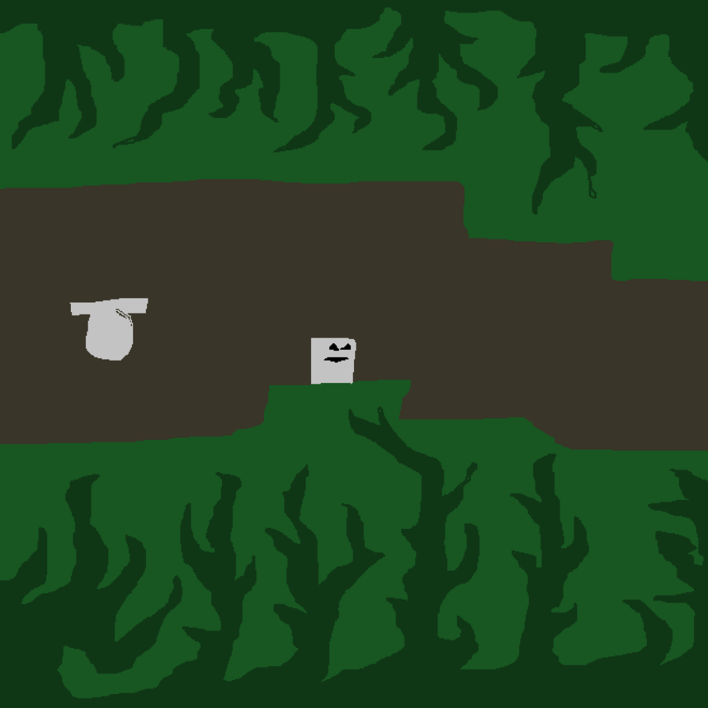

A two player co-op same screen game, work together with a partner to escape from what lurks behind you.

Game 10/100
90 Degrees
A two player co-op same screen game, work together with a partner to escape from what lurks behind you.
Year2012
Development2 days
AvailabilityPlayable